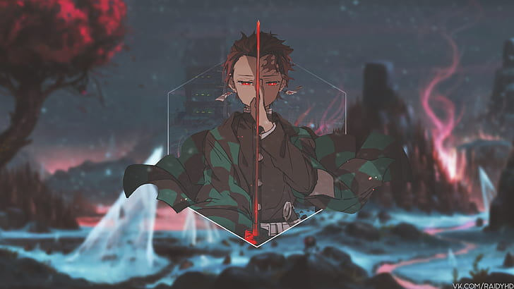

Demon Slayer: Kimetsu no Yaiba is a globally popular manga and anime series following Tanjiro Kamado. After his family is slaughtered and his sister Nezuko is transformed into a demon, Tanjiro joins the Demon Slayer Corps to avenge his family and find a cure to turn Nezuko back into a human.The Lore & WorldThe Demons: Formerly human beings who possess supernatural strength, rapid regeneration, and unique abilities called "Blood Demon Arts". They can only be killed by sunlight, decapitation from special Nichirin blades, or wisteria poison.The Slayers: Highly trained human warriors who use specialized elemental "Breathing Styles" to match the demons' strength.The Hashira: The elite, highest-ranking swordsmen of the Demon Slayer Corps.Main CharactersTanjiro Kamado: The kind-hearted protagonist who utilizes Water Breathing (and later Sun Breathing) to protect his sister.!